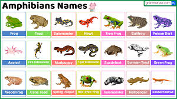
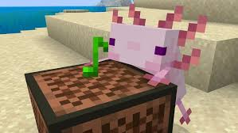
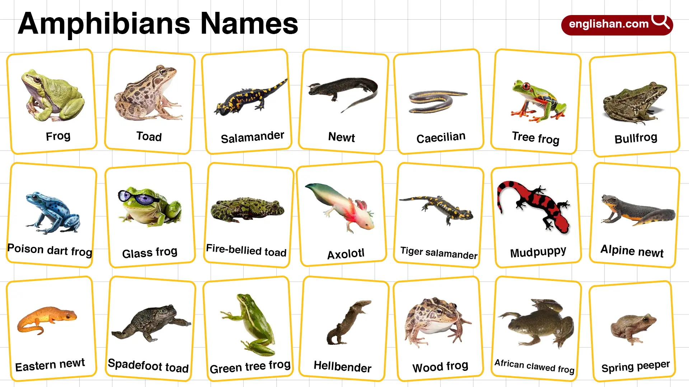

<!DOCTYPE html>
<html lang="en">
<head>
    <meta charset="UTF-8">
    <meta name="viewport" content="width=device-width, initial-scale=1.0">
    <title>Document</title>
    <link rel="stylesheet" type="text/css" href="styles.css">
</head>
<body>
   

</body>
</html>
    
    <h1> Amphibian</h1>
  <div class="button2">
        <a href="page2.html">
        <button>Secound Page</button>
        </a>
        
        <div class="button1">
        <a href="index.html">
        <button>First Page</button>
        </a>
        
          <!-- sidebar -->
 <div id="sidebar" class="sidebar">
    <div class="toggle-btn" onclick="toggleSidebar()">
        ☰      
    </div>
      <!-- Toggle Switch -->
    <div class="theme-toggle">
        <input type="checkbox" id="theme-switch">
        <label for="theme-switch" class="toggle-label">
            <span class="toggle-ball"></span>
        </label>
    </div>
        
  </div>
  <div class="container">
    <div class="box LeftAlign">
      <p>
        Amphibian are Amphibians are cold-blooded (ectothermic) vertebrates that live "double lives"—typically starting as aquatic, gill-breathing larvae and metamorphosing into air-breathing adults that live on land, though many stay near water. 
        Key characteristics include moist, permeable skin used for respiration, four limbs (tetrapods), and a reliance on moist habitats.
      </p>  
    </div>

    <div class="box CenterAlign">
       <p>My favorite amphibian are axolt and frog and I'm putting toad beacause it okay to me atleast kinda not really but still.The reason why I like axolt mostly beacause of Minecraft.The reanson why i like the frogs is beacause the eat insecets(spiders I hate spiders very much).</p>
    </div> 
    
    <div class="box RightAlign">
      <p>Amphibians are found worldwide, except in Antarctica, typically inhabiting warm, moist environments like wetlands
        , forests, rivers, and streams. They live "dual lives," often beginning as aquatic, 
        gill-breathing larvae before transitioning through metamorphosis into land-dwelling, lung-breathing adults. 
        Most still require water or damp areas to lay eggs and keep their porous skin moist.Many thrive in ponds, lakes, marshes, and slow-moving streams, which are essential for breeding and larval development.
        Terrestrial Habitats: Adults are commonly found in moist forest floors, meadows, and under logs or rocks, requiring moisture to breathe through their skin.
        Specialized Environments: Some species, like certain desert toads, survive by burrowing underground to stay moist, emerging only during rains.Breathing and Skin: Because they lack scales and have moist skin, they prefer humid environments to prevent dehydration. </p>
    </div>
    <div>
        <h3> This is an ordered list</h3>
    <ul>
      <li> Axolt</li>
        <li>Frog</li>
        <li>Frog</li>
    </ul>

    
    
    

    

</body>
</html>